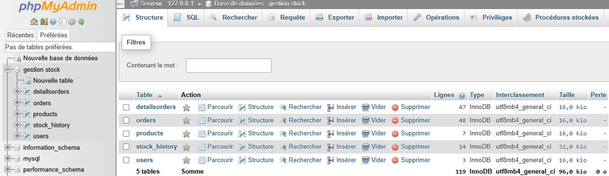

BTS · Projet
Application de gestion de stock
Application web de stock avec commandes, rapports et alerte e-mail quand un seuil est atteint.
- Flask
- MySQL
- Pandas
- SMTP
Contexte
Gestion des utilisateurs, produits et commandes, avec génération de rapports et notifications.
Résultat
Interface de gestion (CRUD), rapports de stock, courbe d'évolution et e-mail d'alerte en cas de stock bas.
Étapes de réalisation
- Backend. Flask pour les routes et les gabarits.
- Données. MySQL pour les données relationnelles.
- Rapports. Pandas pour calculer l'état du stock.
- Alertes. Envoi d'e-mails par SMTP avec mot de passe d'application.
Captures


Difficultés rencontrées
- Comprendre SMTP et les mots de passe d'application.
- Découvrir Flask : routes, templates, environnement.
- Récupérer le stock avant commande pour tracer la courbe.
Compétences
- Python
- Développement web
- Bases de données